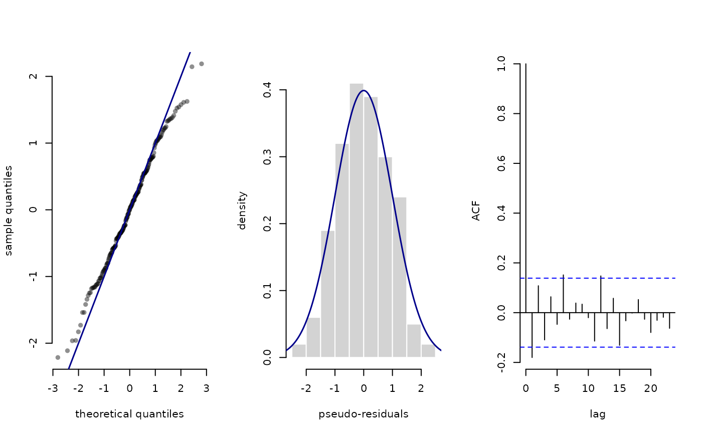

Plot pseudo-residuals
plot.LaMaResiduals.RdPlot pseudo-residuals computed by pseudo_res.
Usage
# S3 method for class 'LaMaResiduals'
plot(x, hist = TRUE, col = "darkblue", lwd = 1.5, main = NULL, ...)Arguments
- x
pseudo-residuals as returned by
pseudo_res- hist
logical, if
TRUE, adds a histogram of the pseudo-residuals- col
character, color for the QQ-line (and density curve if
histogram = TRUE)- lwd
numeric, line width for the QQ-line (and density curve if
histogram = TRUE)- main
optional character vector of main titles for the plots of length 2 (or 3 if
histogram = TRUE)- ...
currently ignored. For method consistency
Examples
## pseudo-residuals for the trex data
step = trex$step[1:200]
nll = function(par){
getAll(par)
Gamma = tpm(logitGamma)
delta = stationary(Gamma)
mu = exp(logMu); REPORT(mu)
sigma = exp(logSigma); REPORT(sigma)
allprobs = matrix(1, length(step), 2)
ind = which(!is.na(step))
for(j in 1:2) allprobs[ind,j] = dgamma2(step[ind], mu[j], sigma[j])
-forward(delta, Gamma, allprobs)
}
par = list(logitGamma = c(-2,-2),
logMu = log(c(0.3, 2.5)),
logSigma = log(c(0.3, 0.5)))
obj = MakeADFun(nll, par)
#> Performance tip: Consider running `TapeConfig(matmul = 'plain')` before `MakeADFun()` to speed up the forward algorithm.
opt = nlminb(obj$par, obj$fn, obj$gr)
#> outer mgc: 336.5166
#> outer mgc: 20.97319
#> outer mgc: 34.15246
#> outer mgc: 19.14836
#> outer mgc: 22.89668
#> outer mgc: 14.22144
#> outer mgc: 16.43229
#> outer mgc: 8.153913
#> outer mgc: 6.812466
#> outer mgc: 9.6369
#> outer mgc: 12.03652
#> outer mgc: 3.217212
#> outer mgc: 3.933861
#> outer mgc: 3.111364
#> outer mgc: 2.511187
#> outer mgc: 3.259669
#> outer mgc: 1.203184
#> outer mgc: 0.9612578
#> outer mgc: 1.247134
#> outer mgc: 1.783606
#> outer mgc: 1.46798
#> outer mgc: 0.7872239
#> outer mgc: 0.06505949
#> outer mgc: 0.1913509
#> outer mgc: 0.06904775
#> outer mgc: 0.1037367
#> outer mgc: 0.01007877
#> outer mgc: 0.002057908
#> outer mgc: 0.0002424967
mod = obj$report()
pres = pseudo_res(step, "gamma2", list(mean = mod$mu, sd = mod$sigma),
mod = mod)
plot(pres)
